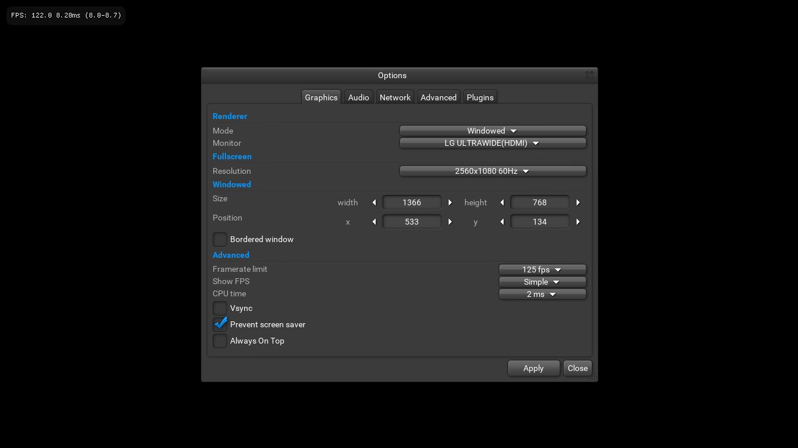
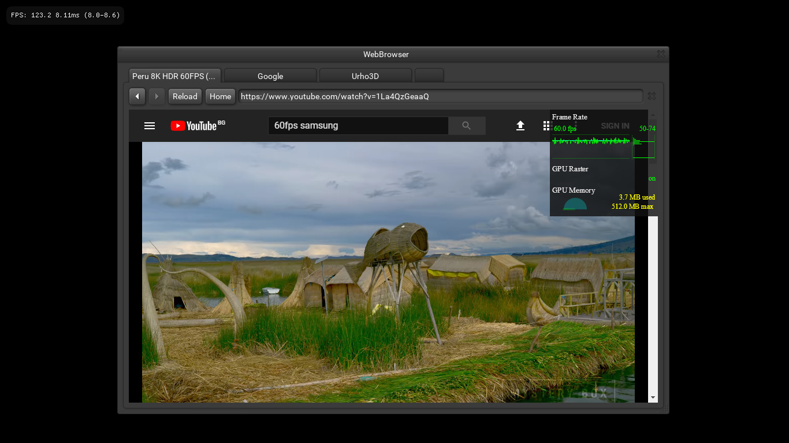
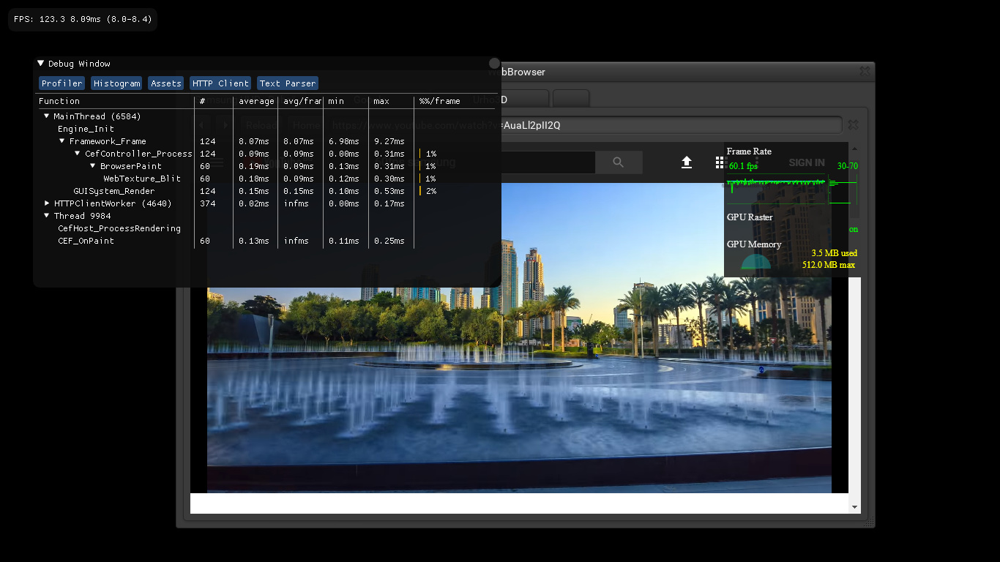
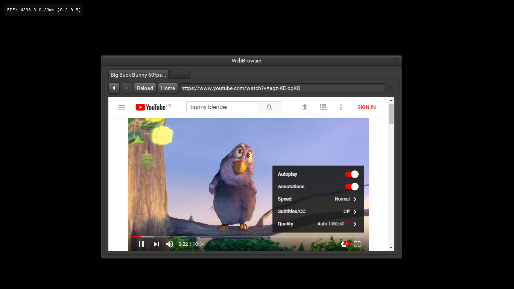

After descent amount of work on this the last month I would like to share some results.
TurboBadger options menu:

CEF3 ui webview and browser:
It handles 60fps CEF3 rendering:

CEF3 main loop runs in a separate thread, CefRenderHandler does not interfere with the main application loop, texture updates are done with dirty rectangle updates to reduce texture upload times:

It doesn’t slow down the rendering loop:

CEF3 integration is a bit tricky to get right, this is my third integration in an engine so far, AtomicGameEngine was also a good reference, especially for the keyboard handling part. WebBrowser components
are available both in the UI and in the scene.
I’d like to thank @Lumak for his TurboBadger integration, it was a good starting point, here is my work on top of it: https://gist.github.com/PredatorMF/18c8f50d72296f427eb6b2bdfa729dad . I’ve added clipboard support and made it work alongside the internal Urho3D UI (consuming input events) and also draw only when TB content is changed.